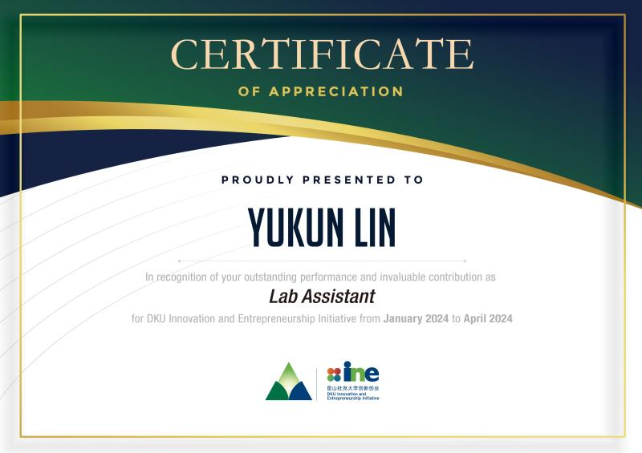

Radiation Oncologist @NANJING BenQ Hospital Co., Ltd. (Suzhou)

I gained sufficient first-hand skills in PET-CT scanning and communication skills with patients mostly those seniors with depressing cancer. I understand and assist the QC process myself during the annual QC of CT scanner and Varian EDGE in BENQ hospital. Successfully helped make the plan for radiation therapy including contouring, and optimizing. I learned basic skills in dealing with workflow in daily work and quickly integrated into a group of people I had never met and did great teamwork. So glad to work with Physicist Cui and Dr. Fengtong Wang.
Lab Assistant @Duke Kunshan Innovation and Enterprenership
-Learned 3D modeling (Autodesk, Blender) for 3D printing from Zero to Hero in 2 months while still taking regular courses at the university -Host workshops for peers and manage their needs to print prototypes and masterpieces -Plan and carry out monthly activities for DKU Innovation and Entrepreneurship regarding VR, AR, Swift, and 3D printing. -Write articles and make posters for social media account for ine.